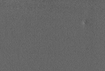
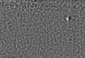
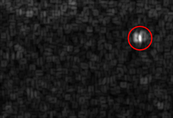
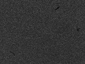
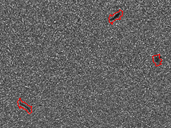
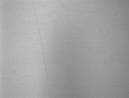
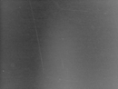
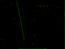
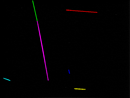

频域分析工具将图像由空间域转换到频域，在频域内分析图像信号的组成部分。构建合适的滤波器来削弱背景对应信号强度或者增强瑕疵部分信号的强度来凸显出空间域中瑕疵区域，大大降低了表面纹理、背景的干扰，提升检测准确度，同时对硬件设备要求较低。频域分析工具效果如图1、图2和图3所示：

(a)细小纹理缺陷图像 (b)频域分析工具结果 ©处理后图像

(a)Mura缺陷图像 (b)频域分析工具结果 ©处理后图像

(a)光照不均匀划痕 (b)处理前图像 ©频域分析工具结果 (d)处理后图像
频域分析工具主要用与缺陷瑕疵检测或去除纹理背景等，通过将时域信号转化到频域，在频域图像上构建滤波器过滤或平滑滤波后Blob分析去除纹理背景的干扰。
| 参数名称 | 参数描述 |
|---|---|
| 频域分析模式 | 分为两种：滤波器模式和去除纹理模式。 |
| 频谱图类型 | 分为两种：频谱边缘化和频谱中心化。 |
| 滤波器类型 | 分为四种：高斯滤波器、均值滤波器、正弦滤波器和高斯带状滤波器。 |
| 滤波器极性 | 高斯滤波器、均值滤波器对应低通滤波器和高通滤波器；正弦滤波器和高斯带状滤波器对应带通滤波器和带阻滤波器。 |
| X方向标准差 | 高斯滤波器专用，X方向标准差范围[0，100]。 |
| Y方向标准差 | 高斯滤波器专用，Y方向标准差范围[0，100]。 |
| 高斯频域主方向 | 高斯滤波器专用，高斯频域主方向范围[0，360)。 |
| X方向直径 | 均值滤波器专用，X方向直径范围(0，100]。 |
| Y方向直径 | 均值滤波器专用，Y方向直径范围(0，100]。 |
| 均值频域主方向 | 均值滤波器专用，均值频域主方向范围[0，360)。 |
| 正弦频率阈值 | 正弦滤波器专用，正弦频率阈值[0，5]。 |
| 高斯带状频率阈值 | 高斯带状滤波器专用，高斯带状频率阈值[0，5]。 |
| 高斯标准差 | 高斯带状滤波器专用，高斯标准差[0，5]。 |
| 滤波核大小 | 去除纹理模式专用，滤波核大小范围[1，51]，且为奇数。 |
| 分割阈值 | 去除纹理模式专用，分割阈值范围[0，255]。 |
| 最小筛选面积 | 去除纹理模式专用，最小筛选面积范围[0，500000]，且最小筛选面积小于最大筛选面积。 |
| 最大筛选面积 | 去除纹理模式专用，最大筛选面积范围[0，500000]，且最大筛选面积大于最小筛选面积。 |
| 去除半径 | 去除纹理模式专用，去除半径范围[0，100000]。 |
| 输出图像类型 | 分为两种：real型和byte型。 |
| 结果图像 | 显示频域预处理后的灰度图像。 |
| 输入图像 | 输入待频域预处理的灰度图像。 |
| 参数名称 | 参数描述 |
|---|---|
| 结果图像 | 图像的长宽和像素大小。 |
| 执行结果 | 工具执行结果。 |
| 执行时间 | 工具执行时间。 |
| 输出图像 | 显示检测的深度图像，显示为伪彩色图像。 |
| 直方图GUI | 高度数据直方图 |
空间域
空间域又称图像空间。由图像像元组成的空间。在图像空间中以长度(距离)为自变量直接对像元值进行处理称为空间域处理。
频域
是描述信号在频率方面特性时用到的一种坐标系，横轴是频率,纵轴是该频率信号的幅度,也就是通常说的频谱图。频谱图描述了信号的频率结构及频率与该频率信号幅度的关系。
频谱边缘化
频谱图高频在中间，低频在四角。
频谱中心化
频谱图低频在中间，高频在四角。
频域分析算法分为两个功能模块：滤波器模式和去除纹理模式。
滤波器模式
使用傅里叶变换将图像由空间域转换至频域，构建合适的频域滤波器，进行频域滤波后使用傅里叶逆变换转换至空间域，凸显瑕疵区域。
可在频域中实现滤波操作，提取或过滤特定的信号。提供四种频域滤波器：高斯滤波器、均值滤波器、正弦滤波器和高斯带状滤波器。
去除纹理模式
使用傅里叶变换将图像由空间域转换到频域，利用Blob工具分割出纹理对应的高频信号并去除，再使用傅里叶逆变换转换空间域，去除图片纹理。
可去除含有周期性变化纹理图像表面的纹理。首先通过调整滤波核大小平滑图像频谱图像，然后通过设置Blob参数提取特定的高频信号点（纹理信号），最后在Blob的中心设置去除半径去除周围的信号，转换回空间域后图像中的纹理已被去除。
无
参见“\Samples\频域分析工具.gvp”。